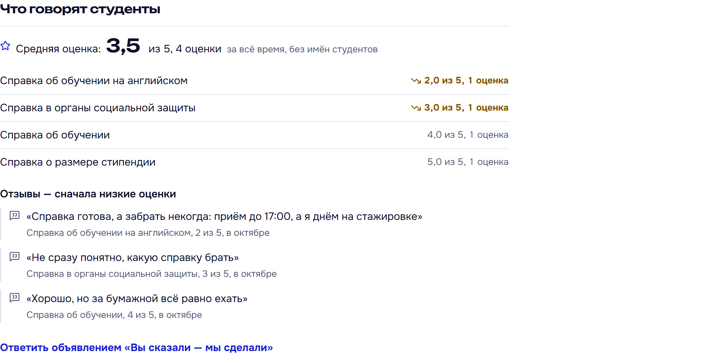
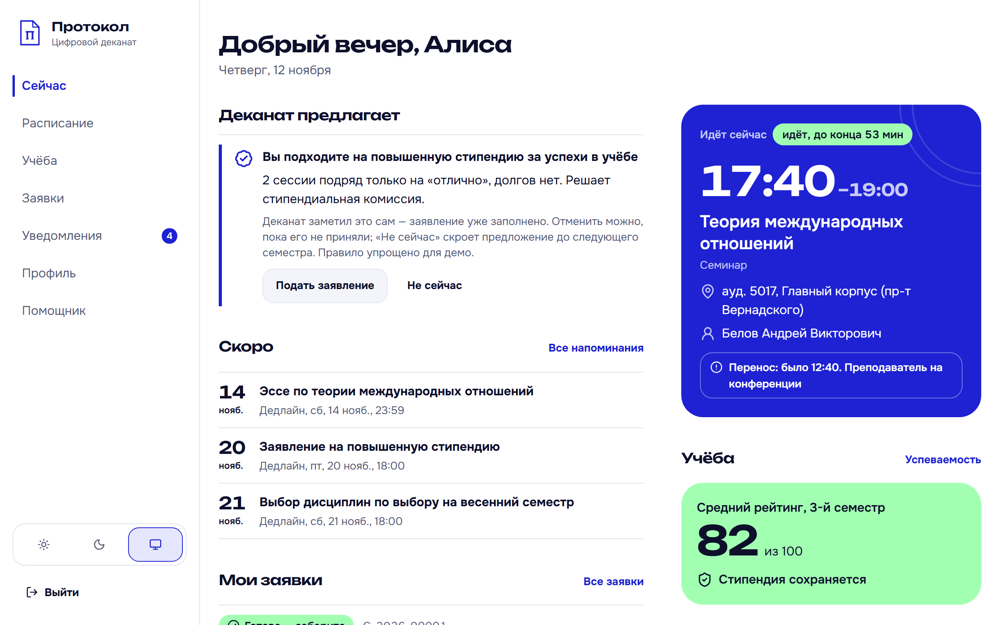
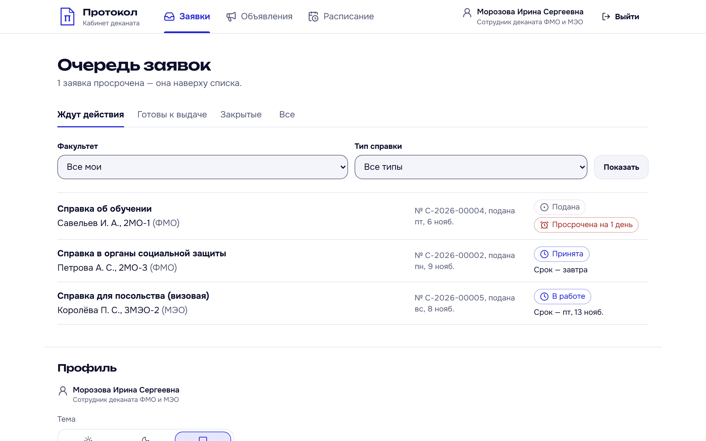
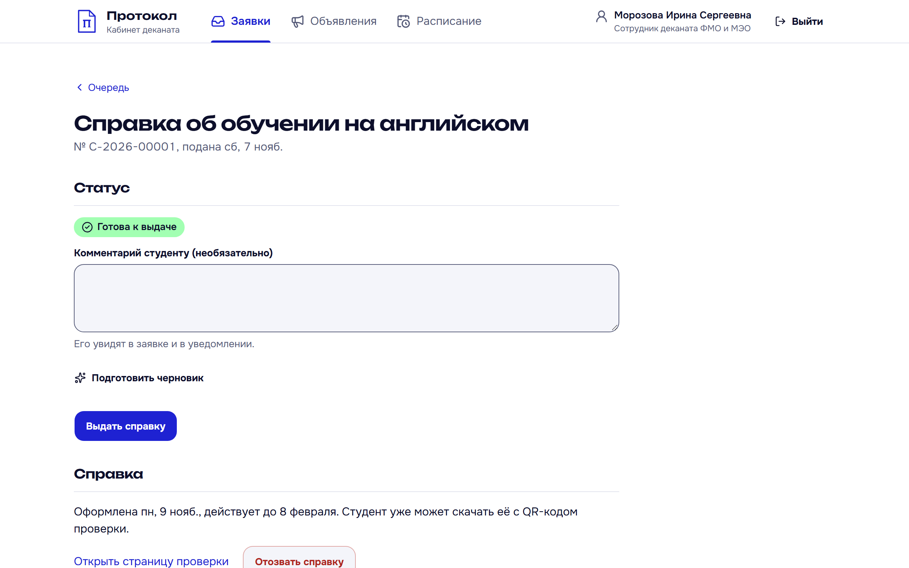
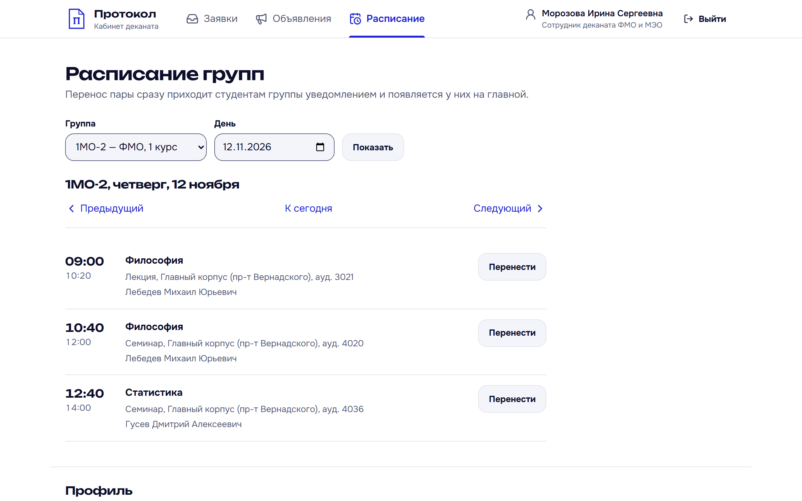
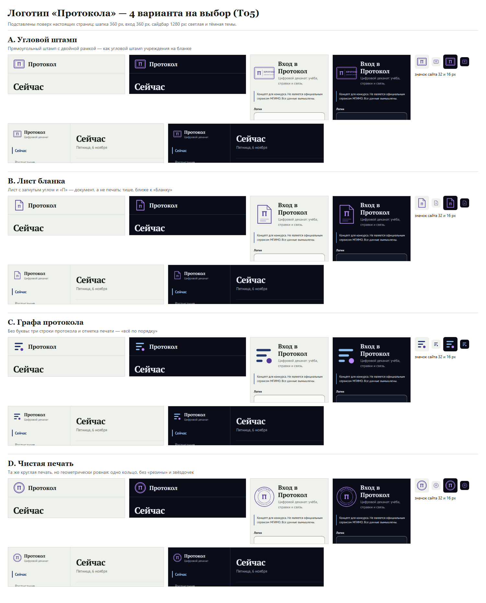
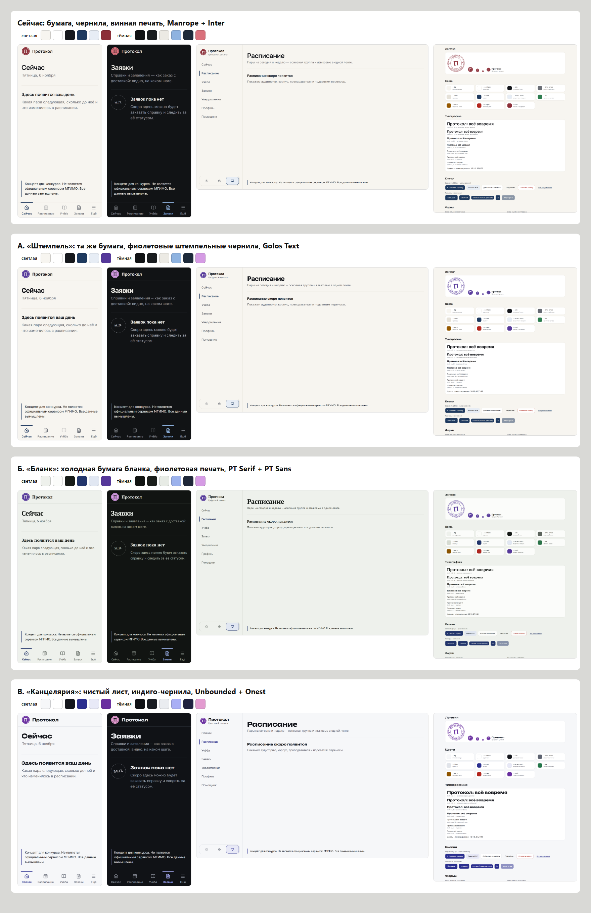
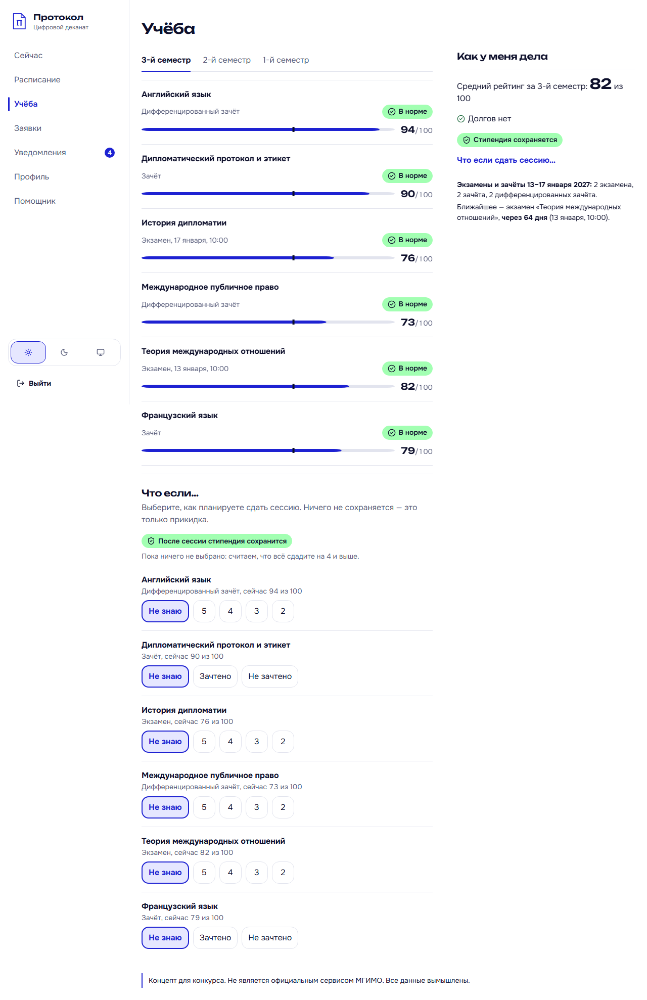
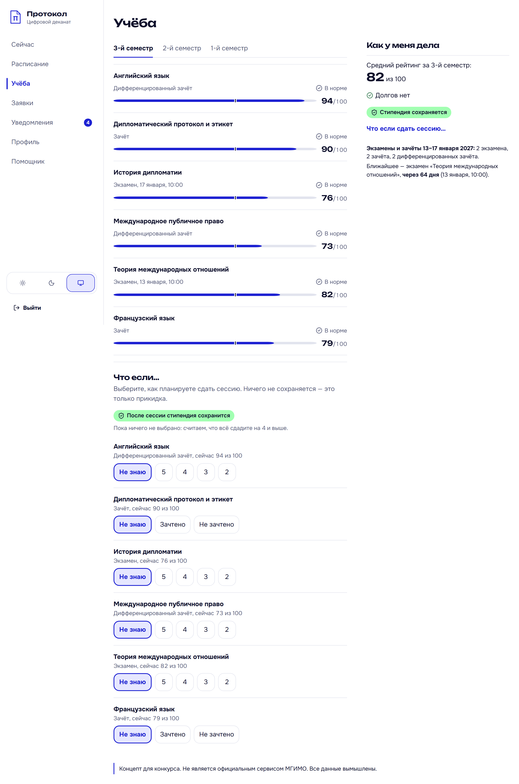

Конкурс «Цифровой деканат будущего»
«Протокол» — цифровой деканат
Личный кабинет студента и кабинет сотрудника деканата. Вуз-пример — МГИМО. Как мы сделали работающий прототип вдвоём: человек ставит задачи и проверяет, ИИ пишет код.
| Прототип | https://141-133-186-165.sslip.io — открывается из России без VPN, с телефона и компьютера |
|---|---|
| Исходный код | github.com/CliffVibe/protokol (публичный) |
| Тестовые аккаунты | Алиса и Тимур — два студента с разными данными; Вера — новый студент без оценок и заявок; Ирина — сотрудник деканата. Логины и пароли — в комментарии к работе. На странице входа есть кнопки «Войти как…» и шесть сценариев для проверки. |
| Команда | Человек (постановка задач, решения, ручные шаги, проверка) + Claude Code (Opus 5.5) с субагентами |
| Сроки | 5–11 ноября 2026: 7 дней, 156 коммитов |
Коротко — за минуту
- Проблема. Учёба студента разбросана по сайту, чатам и очередям; переносы пар узнают из чата старосты, справку ждут неделю.
- Ответ. Главный экран «Сейчас» отвечает на вопрос «что мне важно прямо сейчас», а с деканатом можно общаться как с хорошей службой доставки: заказал — видишь статус — получил.
- Смелые идеи: деканат сам предлагает то, что студенту положено; оценка заявки и ответы «Вы сказали — мы сделали»; мастер «Зачем нужна справка?»; справка с QR-проверкой подлинности; «Что если сдать сессию…» для стипендии; кабинет сотрудника; ИИ-помощник; свободные аудитории в окно; расписание в своём календаре и офлайн.
- Работа с ИИ. Документы-контракты для агента, хук-охранник, три своих субагента, отдельные сессии для дизайна и для атаки на свой сайт, журнал и 89 разобранных ошибок ИИ.
Содержание
- Проблема и что сказали студенты
- Что получилось: обязательное ядро
- Смелые идеи — что меняет общение с деканатом
- Как мы работали с ИИ
- Инструменты — и как мы проверяли их безопасность
- Ключевые промпты по этапам
- Ошибки ИИ и как мы их ловили
- Дизайн: удачные и неудачные варианты
- Вход, данные и защита — простыми словами
- Качество в цифрах
- Что сделано вручную
- Что дальше
1. Проблема и что сказали студенты
| Что нужно студенту | Где это сейчас | Боль |
|---|---|---|
| Расписание | сайт, PDF, чат старосты | переносы узнаёшь последним; языковые группы — отдельно |
| Оценки | отдельная система | непонятно «как у меня дела в целом» и сохранится ли стипендия |
| Справки | очередь в деканате | надо прийти, непонятно какую справку просить, когда будет готово |
| Объявления | чаты, почта | тонут в шуме, дедлайны теряются |
Гипотеза: студенту нужен не «ещё один сайт с разделами», а один экран, который отвечает на вопрос «что мне сейчас важно?», и деканат, с которым можно взаимодействовать, как с хорошей службой доставки.
Пилотный опрос (6 ноября)
Опрос в Яндекс Формах (9 вопросов, полторы-две минуты) разослал друг среди своих однокурсников. Пришло 4 ответа из 4 разных вузов — ни одного из МГИМО. Поэтому мы считаем «сколько из 4», а не проценты: это сигналы, а не статистика. Но все сигналы совпали с гипотезой.
| Вопрос | Ответ | Что мы сделали |
|---|---|---|
| С чего смотришь расписание и новости? | Телефон — 4 из 4 | Сначала верстаем 360 px; каждая задача проверяется на телефоне |
| Как узнаёшь о переносе пары? | Чат группы — 4 из 4; сайт вуза — 0; «прихожу и узнаю на месте» — 2 | Перенос — на «Сейчас» за 0 касаний и уведомление со ссылкой на день |
| Что в кабинете в первую очередь? | «Что мне сейчас важно» — 3 из 4 | Лента «Сейчас» стала сердцем продукта |
| Последняя справка и сколько ждали? | Справка об обучении, неделя | Заявка с таймлайном и сроком, PDF с QR — сразу на «Готова» |
| Насколько понятно, как дела с учёбой (1–5)? | 1, 3, 5, 5 | «Светофор» по дисциплинам и «стипендия: сохраняется / под угрозой» |
| Нужен ли ИИ-помощник? | 0 из 4 | Честный сигнал: помощник закрывает «спросить деканат, когда он закрыт», а не «фичу ради фичи» |
Цитаты из свободных ответов: «Никакого общения в целом не было, только замены, и то узнавал через чаты»; «отсутствие связи»; «сайт долго грузился».
Персоны (вымышленные) и сценарии, по которым можно пройти кабинет
- Алиса, 2 курс, ФМО — два языка, языковые группы не совпадают с основной. Хочет не пропускать переносы и видеть пары одним взглядом с телефона в метро.
- Тимур, 4 курс, МЭО — задолженность, едет на стажировку. Хочет понять, что с долгом и стипендией, и быстро получить справку на английском для визы.
- Ирина Сергеевна, деканат — хочет очередь заявок вместо потока писем и сразу объявлять перенос нужным группам.
- Утро: «Сейчас» — ближайшая пара, аудитория, преподаватель, сколько до начала, подсвеченный перенос, дедлайн.
- Как дела с учёбой: средний рейтинг, светофор, сессия, «стипендия под угрозой» с причинами.
- Справка для визы: «Заказать справку» → «Виза» → справка на английском → «Отправить заявку».
- Деканат обработал: сотрудник меняет статус → студент получает уведомление → скачивает PDF с QR.
- Проверка подлинности: кто угодно сканирует QR → «Справка действительна», без лишних личных данных.
- Изоляция: подставить в адрес номер чужой заявки → 404 «Такой заявки у вас нет».
2. Что получилось: обязательное ядро
Все пять разделов из ТЗ — вход и профиль, расписание, успеваемость, заявки, уведомления — работают на телефоне 360 px и на компьютере, в светлой и тёмной теме, при крупном тексте (200 %). У каждого экрана с данными есть четыре состояния: загрузка, пусто, ошибка, данные.


3. Смелые идеи — что меняет общение с деканатом
Правило отбора: сначала ядро работает идеально на телефоне, потом — идеи. Каждая идея отвечает на конкретную боль из опроса.
A. Лента «Сейчас» вместо меню разделов
Главная собрана по срочности, а не по разделам: ближайшая пара с отсчётом «через 25 мин», переносы и отмены, ближайшие дедлайны, мои заявки, объявления и «стипендия: сохраняется / под угрозой». Узнать о переносе — 0 касаний (было: чат старосты или «прихожу и узнаю на месте»).
B. Заявка как доставка + кабинет сотрудника
Таймлайн «Подана → Принята → В работе → Готова → Выдана», ожидаемый срок, комментарии деканата; отклонение — только с причиной и кнопкой «Подать заново». У сотрудника — очередь заявок своих факультетов с просрочкой, смена статусов, объявления по факультетам, курсам и группам, перенос пары с уведомлением групп. Без кабинета сотрудника статус заявки был бы декорацией — с ним сценарий живой от начала до конца.


C. Мастер «Зачем нужна справка?»
Студент не обязан знать названия бланков: выбирает цель — виза, военкомат, работа, соцзащита, стажировка — и получает нужную справку с рекомендованным языком. Для МГИМО это визы и стажировки. Справка для визы — 5 касаний (было: визит в деканат и неделя ожидания).
D. Справка с QR-проверкой подлинности
PDF на русском или английском с QR-кодом. Посольство или работодатель сканирует его и видит «Справка действительна / отозвана / срок истёк» — без входа и без оценок, только тип, срок и инициалы. Деканат может отозвать справку — QR сразу покажет «Отозвана». Проверка подлинности без звонка в деканат.


E. Стипендиальный светофор и «Что если…»
Таблица оценок превращается в ответ: светофор по каждой дисциплине («Долг», «Ниже 60 — не хватает 6 баллов», «В норме») и прогноз «если сдам экономику на 4 — стипендия сохранится?». Из долга — одно касание до заявления на пересдачу с уже подставленной дисциплиной. Правило стипендии в прототипе вымышленное, не МГИМО.
F. ИИ-помощник деканата — «деканат, когда он закрыт»
Отвечает на вопросы по регламентам и о своих данных («когда у меня следующий экзамен?», «какую справку взять для военкомата?») и ведёт кнопкой в раздел. Сотруднику — черновик ответа студенту. Модель — GigaChat (Сбер); ключ только на сервере, в запрос попадают данные только текущего студента, ответ модели ничего не меняет сам. Без ключа помощник честно работает по базе ответов деканата.
G. Расписание там, где студент уже смотрит, — и без сети
Подписка на свой календарь (Google, iPhone): переносы приходят туда сами. Кабинет ставится на телефон как приложение и показывает расписание на две недели без интернета — в метро и в корпусе в Одинцове.
H. Доступность — не опция
Тёмная тема, текст до 200 % без поломок на всех экранах, полная работа с клавиатуры с видимым фокусом, контраст ≥ 4,5:1 во всех парах цветов — всё это проверяют автоматические тесты.
| Сценарий | Было (по опросу) | Стало в «Протоколе» |
|---|---|---|
| Узнать о переносе пары | чат группы (4 из 4) | 0 касаний: «Сейчас» + уведомление |
| Сохранится ли стипендия | у одного — «совсем непонятно» | 0 касаний на «Сейчас»; прогноз — 3 касания |
| Справка для визы | визит в деканат, неделя | 5 касаний, статус онлайн, PDF сразу на «Готова» |
| Проверить подлинность справки | звонок в деканат | скан QR камерой, без входа |
| Расписание без сети | — | 1 касание, две недели в офлайне |
Деканат приходит сам — три идеи из ресерча
Перед сдачей мы изучили студенческие порталы и сервисы деканатов в России и за рубежом — 19 идей с источниками (docs/process/research-ideas-T14.md). Человек выбрал три, которые сильнее всего меняют общение с деканатом, и мы их сделали.


I. «Вам положено» — деканат предлагает, а не ждёт заявления
Если студент проходит правило по своим данным — сейчас это повышенная стипендия: средний рейтинг от 80, долгов нет, — на «Сейчас» появляется «Деканат предлагает: вы подходите на повышенную стипендию». Заявление уже заполнено: одно касание — и оно в работе, у сотрудника с пометкой «Предложено деканатом». «Не сейчас» прячет предложение до следующего семестра. Так работают беззаявительные услуги Госуслуг и проактивные выплаты в Эстонии; Georgia State University зачисляет гранты студентам в риске без заявления. Правило в прототипе вымышленное — так и написано на экране.
J. Двустороннее общение: оценка заявки и «Вы сказали — мы сделали»
Когда справка готова, студент оценивает работу деканата от 1 до 5 и может написать, что улучшить. Сотрудник видит под очередью «Что говорят студенты»: среднюю оценку по типам справок (хуже — выше) и отзывы, сначала низкие, — без имён студентов. Одним касанием он отвечает объявлением с пометкой «Вы сказали — мы сделали». В демо: «справка готова, а забрать некогда — приём до 17:00» → «по четвергам выдаём справки до 19:00». Практика University of Edinburgh и Strathclyde.
K. Перенос пары без накладок
Сотрудник переносит пару, а сервер до записи проверяет новое время: у группы уже пара, у части её студентов — языковая пара, преподаватель занят, аудитория занята. Ошибка встаёт у поля, которое её исправит, а если занята аудитория — под полем свободные в корпусе рядом с прежней, одно касание подставляет номер. Чужие группы и люди не называются: только время и номер аудитории. Раньше это делалось звонками «а эта аудитория свободна?».
Сначала мы показывали свободные аудитории студентам — «где посидеть в окно» (идея UNSW Freerooms). Человек в команде её снял: свободные аудитории обычно закрыты, ключи студентам никто не даст — подсказка обещала бы то, чего нет. Тот же механизм оказался полезнее деканату.


Кабинет сотрудника деканата



4. Как мы работали с ИИ
Человек не программирует — он ставит задачи, принимает решения и проверяет. Код, тесты и документацию пишет Claude Code. Чтобы это работало на проекте в 15 тысяч строк, мы построили вокруг агента систему правил, проверок и памяти.
Документы — контракт для агента
| Файл | Зачем |
|---|---|
CLAUDE.md | Правила агента: стек и точные версии, «железные правила» безопасности, определение «готово», что делать с журналом. Агент читает его в начале каждой сессии. |
docs/00-brief.md | Исходное ТЗ конкурса — сверяемся в начале каждого этапа и перед сдачей. |
01-concept · 02-plan · 03-architecture · 04-design | Зачем, когда, как устроено, как выглядит — источник правды вместо пересказа в чате. |
05-security.md | Инварианты безопасности S1–S9. Агенту запрещено его менять: правку может предложить только текстом для человека. |
07-tooling.md | Какие плагины, MCP и скиллы проверены, какие отклонены и почему. |
docs/tasks/T01…T14 | 14 задач с критериями приёмки. Агент не начинает код, пока критерии не понятны. |
docs/process/ | Журнал (29 записей), ошибки ИИ (89), промпты, отчёты ревью, red-team, Lighthouse, 611 скриншотов. |
Цикл каждой задачи
/log, ошибки ИИ, ручные шагиЗащита от ошибок агента — до того, как они случатся
- Хук-охранник
guard.mjsперехватывает команды и правки агента до выполнения: не даёт читать.env, использоватьNEXT_PUBLIC_для ключей, обращаться к базе мимо слоя репозиториев. 18 собственных тестов. Агент дважды на него наткнулся — и не обходил, а менял подход. - Тест-страж разбирает код и падает, если хоть одна страница кабинета не проверяет, кто вошёл.
- ESLint-правила запрещают импорт базы данных вне
src/server/repos/. - Отдельная база для e2e: тесты не трогают демо-данные и убирают за собой; после каждого прогона агент проверяет запросом, что в базе ровно исходные данные.
Свои субагенты и параллельные сессии
- security-reviewer — проверяет изменения на нарушение инвариантов S1–S9; ux-reviewer — экраны по дизайн-системе, состояниям, контрасту, доступности; mobile-qa — проходит 6 сценариев на 360 px и пишет для них e2e.
- На полировке (T13) — 6 агентов параллельно: 4 UX-ревью по областям экранов, проверка кода по web-interface-guidelines и mobile-qa. Итог — около 35 правок.
- Дизайн-сессия — отдельный Claude как «дизайн-партнёр, не исполнитель»: человек обсуждал с ним отзыв подруги («дизайн так себе»), выбрал направление, и только потом сессия сделала код.
- Red-team-сессия — отдельный Claude с «чистым контекстом атакующего» атаковал наш сайт по 9 группам сценариев: сначала локально, потом прод — по отдельному «да» человека.
- Длинные сессии мы передаём новым через «промпт-передачу»: что прочитать, где мы, подводные камни, правила работы с человеком (раздел 6).
Цифры процесса
Посчитаны скриптом scripts/ai-metrics.mjs из git и docs/process/ — без ручного подсчёта.
5. Инструменты — и как мы проверяли их безопасность
Перед подключением любого плагина, MCP-сервера или скилла агент проверял: кто издатель, лицензия, свежесть релиза, npm audit, подпись сборки (provenance), телеметрию и что инструмент может делать с нашими файлами и сетью. Новые зависимости ставятся только с точной версией и не раньше чем через 3 дня после релиза (minimumReleaseAge). Решения записаны в docs/07-tooling.md.
| Инструмент | Для чего |
|---|---|
| Claude (чат) | анализ ТЗ, концепция, план, каркас документов, ресерч и аудит инструментов |
| Claude Code (Opus 5.5) | весь код, тесты, документы; plan mode, субагенты, параллельные сессии |
| Субагенты security-reviewer, ux-reviewer, mobile-qa | свои агенты-ревьюеры (.claude/agents/) |
| Плагины Anthropic: security-guidance, claude-security, pr-review-toolkit, typescript-lsp, frontend-design | ревью безопасности правок, глубокий скан уязвимостей, ревью кода, навигация, дизайн |
| Playwright MCP (Microsoft), shadcn MCP | агент смотрит интерфейс глазами; подбор компонентов |
| Скиллы react-best-practices, web-interface-guidelines (Vercel) | правила производительности и интерфейса |
| Claude in Chrome | сбор корзины VPS, снятие цветов с сайта-ориентира для дизайн-сессии |
| Lighthouse 13.6, chrome-devtools-mcp (Google) | замеры скорости и доступности (временно, вне проекта; удалены после замеров) |
| Antigravity CLI (Google) | «условно»: только простые тексты без секретов, в песочнице из пустой папки |
| Adobe for creativity (коннектор) | подсказки по шрифтам и палитрам на T04 (с разрешения человека) |
| gitleaks, Semgrep, pnpm audit, Dependabot | CI: секреты по всей истории, статанализ, уязвимости зависимостей |
| GigaChat API (Сбер) | ИИ внутри продукта — помощник деканата |
| Яндекс Формы | опрос студентов |
Что мы отклонили — и почему
| Инструмент | Причина |
|---|---|
| next-devtools-mcp | 4 месяца без обновлений, уязвимые зависимости без исправления, телеметрия по умолчанию |
| Плагин и MCP Prisma | удалённый сервер с разрушительными инструментами (сброс базы); нам хватает CLI |
| @lhci/cli (Lighthouse CI) | 12 высоких уязвимостей в зависимостях — заменили на полный Lighthouse вне проекта |
| Context7 | в марте 2026 через него крали .env (ContextCrush); для нашей версии Next есть локальная документация |
| Сторонние маркетплейсы скиллов | их никто не проверяет — берём только от Anthropic или от вендора самого инструмента |
6. Ключевые промпты по этапам
Полные тексты — в docs/process/prompts.md и журнале. Здесь — самые влиятельные и почему они сработали.
Этап 0. Первое сообщение агенту — критика до кода
Прочитай CLAUDE.md и все docs/… Проверь окружение. Прежде чем писать код — критически посмотри на каркас: что противоречит ТЗ, чего не хватает, где риски. Ответь списком вопросов.
Почему сработал: агент начал с разбора, а не с кода — и сам нашёл противоречия в плане до первой строки.
Каждая задача — план на одобрение
Задача — T03 «Вход, сессии, изоляция». Сначала plan mode с планом на одобрение, к коду — только после «да». В плане учти: requireStudent() в cache(), вызывается в каждой page и Server Action, в layout — нет; блокировка по «логин + IP», чтобы посторонний не мог заблокировать аккаунты жюри; тест-страж guards.test.ts…
Почему сработал: известные ловушки (из ревью прошлой задачи) переданы прямо в постановку — агент не наступает на них второй раз.
Передача контекста новой сессии
Сначала прочитай: CLAUDE.md, … Где мы: … (факты и версии). Задача сейчас: … Подводные камни: prisma migrate dev без интерактива не работает; у человека нет pnpm в PATH… Правила работы с человеком: общение по-русски; решения — с его «да»; секреты никогда не просить в чат…
Почему сработал: новая сессия не видит переписку — промпт сжимает её в факты, ловушки и договорённости, а источником правды оставляет файлы.
Рамки для атаки на свой сайт (red team)
Атака: только наш сайт; чужие хосты (GigaChat, GHCR, Docker Hub, GitHub) не трогаем. Без DoS и флуда — лимиты проверяем единичными запросами. Только тестовые аккаунты и вымышленные данные. Защиты агента (guard.mjs, deny, классификатор) не обходим. Атака на прод — только после отдельного «да» на адрес и окно времени.
Почему сработал: безопасная атака требует явных границ. Агент соблюдал их даже там, где это мешало: живой GigaChat не атаковал, потому что это чужой хост.
Дизайн-сессия: собеседник, а не исполнитель
Человек хочет вместе с тобой подумать, как улучшить дизайн… Ты — собеседник и дизайн-партнёр, а не исполнитель: сначала разговор и варианты, код — после «да».
Почему сработал: вместо «сделай красивее» — три направления на макетах, честное признание «нейрослопа» в одном из них и выбор человека. Подробности — раздел 8.
Правила работы с человеком (постоянные)
Ручные задачи и решения — только с моего «да». В конце каждого хода — короткий список «📌 За вами». .env создан мной, агенту .env не читать; если нужен ключ — «notepad .env → вписать → сохранить», в терминал не вводить. Ошибки ИИ — в ai-errors.md.
7. Ошибки ИИ и как мы их ловили
Каждую ошибку агента мы записываем в docs/process/ai-errors.md: что ИИ сделал не так, как это заметили, как исправили и какой урок вынесли. 89 записей за 7 дней. Кто поймал (по колонке «Как заметили»; одна ошибка может попасть в несколько групп):
| Тесты (unit, e2e, CI) | 36 |
| ИИ сам — на скриншоте, в diff, при самопроверке | 31 |
| Субагенты и ревью | 17 |
| Человек | 7 |
| Хук-охранник | 2 |
Вывод: большинство ошибок ловит система — тесты, ревьюеры и сам агент. Человеку остаются вещи, которые видны только глазами и на настоящем устройстве. Пять показательных случаев:
| Что случилось | Кто поймал | Урок |
|---|---|---|
Фокус с клавиатуры был невидим на плитках мастера и ссылке помощника: в Tailwind v4 outline-none обнуляет стиль обводки | новый e2e «фокус виден на каждом шаге Tab» — axe этого не ловил | доступность проверять тестом, а не глазами на одном экране |
| Коммит обнулил журнал — 325 строк, записи первых семи задач | ИИ сам, когда скрипт метрик насчитал 15 записей вместо 28 | документы процесса — только дописыванием; перед коммитом смотреть большие удаления |
| Сборка образа на сервере упала: конфиг тестов импортировал файл, которого нет в Docker | CI GitHub | проверять сборку без тестовых файлов |
| Неразрывные пробелы испортились при правке через shell — и тесты прошли, потому что ошибка была одинаковой в коде и в тесте | ИИ сам, по diff | зелёный тест не доказывает правку, если тест правили той же командой |
| Белая полоса внизу приложения на Android в тёмной теме: в манифесте был жёстко белый цвет | человек на своём телефоне | PWA проверять установленным приложением в обеих темах |
8. Дизайн: удачные и неудачные варианты
Версия 1 — «Бланк» (T04–T12)
Первая дизайн-система — метафора бумажного документа: PT Serif, приглушённые чернила, строки под линиями, печать «М.П.». Логотип — монограмма «П» на листе бланка; человек выбирал из четырёх вариантов. Значок сайта мы позже перерисовали под сетку 16 px — на 1x старый превращался в кашу.


Отзыв: «дизайн так себе» → дизайн-сессия
Подруга человека (внешний взгляд) сказала «дизайн так себе» и прислала ориентир — сайт магистратуры МГИМО с ультрамарином и мятой. Человек добавил: «Главное меньше нейрослопа, больше согласования цветов, и интуитивность должна оставаться». Отдельная сессия Claude сняла цвета с сайта-ориентира, предложила три направления и сделала макеты.
- А «Бланк поярче» — безопасно, но полумера.
- Б «Цифровой деканат» — отклонён как нейрослоп: значки в пастельных квадратиках, «таблетки» везде, пять акцентов. ИИ признал это сам, когда человек сформулировал требование.
- Б′ «строже» — выбран: два фирменных цвета с ролями (ультрамарин — бренд и действия, мята — только «хорошо и готово»), статусы — значок, текст и черта, прежняя структура экранов.

Пиксельный логотип и сочетание цветов «один в один» с сайтом МГИМО мы сознательно не взяли: это фирменный стиль программы, а ТЗ запрещает выдавать себя за официальный сервис. Текст на мяте человек попросил сделать контрастнее («сливается») — сравнили три варианта и выбрали «чернила» (15,6:1).
После Б′: ревью шести агентов и правки человека
Новый вид проверили 4 UX-ревьюера, агент по web-interface-guidelines и mobile-qa. Примеры того, что изменилось:
- «В норме» залито мятой в каждой строке «Учёбы» — норма громче проблемы. Стало: спокойное — тихий значок, проблема — цветной чип.
- Синий текст, который не ссылка, путал — синий оставили только ссылкам.
- Человек: «если стипендия под угрозой — ничего нет, а когда всё хорошо — мятный фон». Стало: угроза так же заметна, но языком статусов, с шагом «Как закрыть долг».
- Человек: «нигде не написано, что это аккаунт Ирины». Стало: ФИО и роль в шапке кабинета сотрудника.
- Идею друга «менять фон» обсудили и отклонили: ломает цельность стиля и гарантию контраста.


9. Вход, данные и защита — простыми словами
- Пароль мы не храним — храним его «отпечаток» (argon2id), из которого пароль не восстановить.
- После входа браузер получает случайный пропуск, который не может прочитать даже JavaScript на странице (cookie
__Host-session, HttpOnly). В базе хранится не сам пропуск, а его отпечаток. - Сервер всегда сам определяет, кто вы, по пропуску — поэтому подменить номер заявки в адресе бесполезно: чужая заявка отвечает 404, как будто её нет.
- Перебор паролей: после 5 неверных попыток вход для пары «логин + IP» блокируется на 5 минут — посторонний не может заблокировать аккаунты жюри со своего адреса.
- Ключи от ИИ лежат только на сервере; браузер о них не знает. В запрос к модели попадают данные только текущего студента, а ответ модели ничего не делает сам — только предлагает кнопки.
- Публичная проверка справки показывает только статус, тип, срок и инициалы — без оценок и номера зачётки.
- Только вымышленные данные; на входе и в подвале — плашка «Концепт для конкурса».
Как проверяли
| Проверка | Результат |
|---|---|
| e2e-тесты безопасности: чужая заявка, чужой Server Action, кабинет сотрудника для студента, вход без пароля, секреты в HTML и JS, хеши паролей, блокировка, публичная проверка | все проходят на каждом прогоне |
| Атака на свой сайт (отдельная сессия Claude): 9 групп — чужие данные, права, сессии, вход, ввод и вывод, публичные точки, ИИ-помощник, заголовки, скан — локально и на проде | 0 уязвимостей; данные прода не менялись |
| security-reviewer по всему репозиторию | блокеров нет |
| Claude Security «Scan codebase» (26 агентов-исследователей, каждую находку проверяли 3 независимых агента) | 0 находок, статус «verified» |
| gitleaks по всей истории, Semgrep, pnpm audit в CI | зелёные |
| Заголовки на проде: HTTPS, HSTS, CSP с nonce, запрет встраивания | на месте |


10. Качество в цифрах
| Что | Результат |
|---|---|
| Lighthouse на проде (мобильный профиль: медленный 4G, процессор ×4) — «Сейчас», расписание, заявки, обе темы | 100 скорость, 100 доступность на всех шести замерах; главный блок появляется за 0,9–1,2 с |
| e2e (Playwright): компьютер 1280 и телефон 360 px | 745 проверок, 0 падений |
| Доступность в e2e | axe без серьёзных нарушений на всех 24 маршрутах в обеих темах; текст 200 % без скролла вбок на всех маршрутах; видимый фокус на каждом шаге Tab |
| Unit и интеграция с настоящей базой (Vitest) | 597 проверок, 0 падений |
| Контраст | все пары цветов ≥ 4,5:1 в обеих темах — проверяет отдельный тест |
| Изоляция тестов | своя база для e2e; после прогона агент проверяет запросом, что там ровно исходные данные |
Как устроено
Next.js 16 (серверные компоненты и Server Actions), TypeScript, PostgreSQL 16, Prisma 7, Tailwind 4 + shadcn/ui, zod на каждом вводе, argon2id. Хостинг — VPS в Москве (FirstVDS), Docker Compose + Caddy с автоматическим HTTPS; образы собирает CI GitHub. Стек обычный и масштабируемый: при росте числа пользователей добавляются экземпляры приложения за Caddy и пул соединений к базе. Демо-данные каждую ночь пересеиваются от текущей даты, чтобы у жюри расписание всегда было «на этой неделе».
11. Что сделано вручную
- Решения: выбор концепции и разделов, логотипа, палитры, направления Б′ и цвета текста на мяте; что брать из ревью и что отложить; публичный репозиторий; отказ от смены фона.
- Опрос: форма в Яндекс Формах, рассылка через друга, выгрузка ответов.
- Секреты: файл
.envс паролями жюри и ключом GigaChat — только руками человека; агенту читать его запрещено. - Хостинг: выбор тарифа, регистрация и оплата VPS, запуск скрипта настройки по SSH,
.envна сервере, обновление прода. Корзину собрал агент — оплачивал человек. - Проверки: прод на своём телефоне (Android: установка как приложения — так нашли белую полосу), живой GigaChat на проде, запуск Claude Security из меню, разрешение на атаку прода.
- Внешний взгляд: отзыв подруги о дизайне и идея друга про фон.
- Окружение: установка Brave с расширением Claude in Chrome, Docker Desktop.
В журнале 27 отметок «Вручную» — по каждой задаче видно, что сделал человек.
12. Что дальше
Из ресерча (19 идей с источниками) три уже в кабинете — раздел 3. Следующие — те, что продолжают главную мысль «Протокола»: деканат приходит к студенту сам.
Электронный студенческий с QR-проверкой
Закон 539-ФЗ переводит студенческие билеты и зачётки в электронный вид. Наша страница проверки справки — готовая основа: тот же QR, те же правила «показывать только статус и инициалы».
Доверие вместо справок и очередей
«Я заболел» — самосертификация короткого пропуска без похода к врачу (Leeds, Waterloo); живая электронная очередь в деканат с прогнозом ожидания (York University, ВШЭ).
Дальний горизонт
Справки и дипломы как проверяемые цифровые документы (Europass, EBSI), которые работают между странами — для МГИМО это визы и обмены. «Жизненные ситуации» вместо набора бланков: «Еду по обмену», «Беру академ» — шаги со статусами.